京丹後的地產蔬果，以及解禁的松葉蟹！
11 月在久美濱的三週停留，有三四天的當日行程只有騎腳踏車亂晃：尋找無人農產直販所、去著名的觀光牧場 Sora 吃冰（太喜歡了還去了兩次），吃遍季節特產——花生、地瓜、水梨、松葉蟹，享受漁村鄉下秋日的風光、日出與日落。這是在這裡最平凡的部分，仍值得記上一筆。
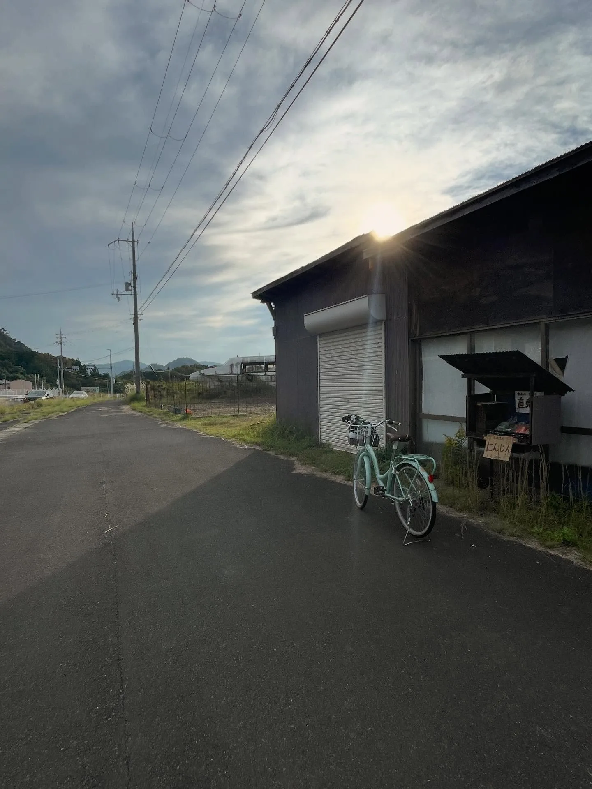
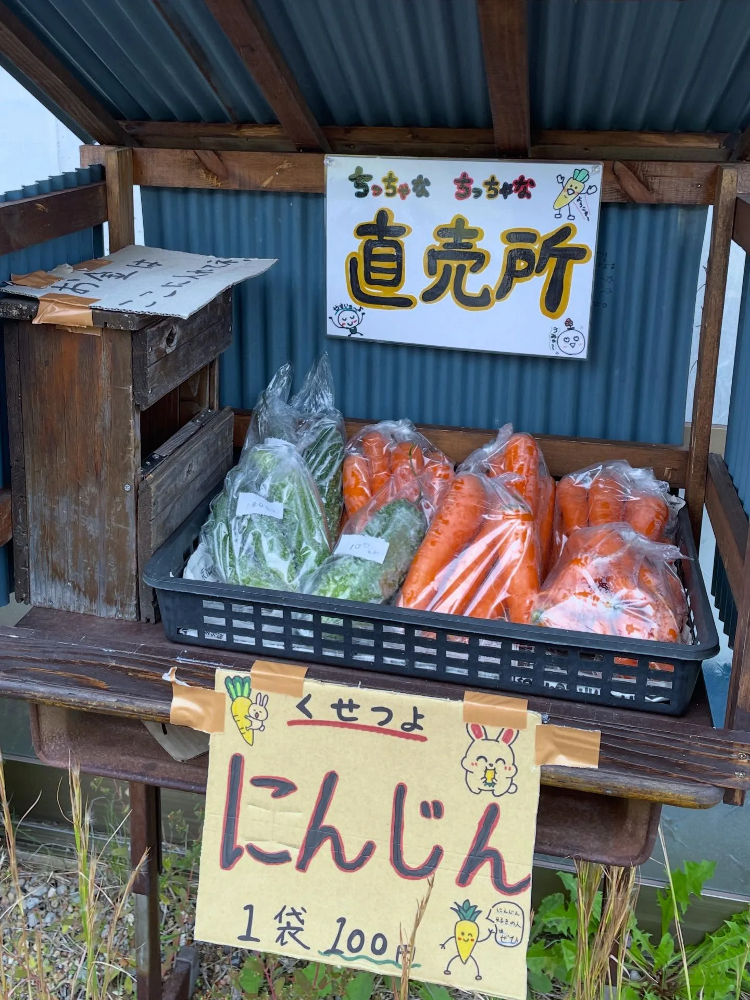
農產直販所：便宜、新鮮，又有超市少見的食材
久美濱地區大大小小的農產品直販所很多，便宜又新鮮，而且有超市少見的食材，比如新鮮花生（燙熟直接吃就很好吃！）、巨大香菇（3 大朵 500 日圓，肉很厚，炸來吃超爽！）、綠苦瓜等等。另外也吃了當季的松葉蟹、地瓜和水梨。
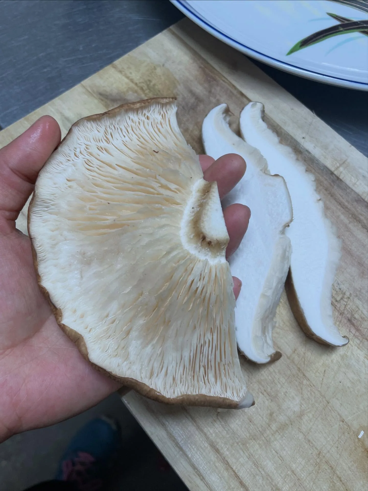
如果還有機會，會想要 8 月中下旬再來一趟，吃吃最著名的哈密瓜、二十世紀梨，還有桃子和葡萄～（11 月其實也還有葡萄，但我在姬路吃太多了，在這邊好像只有買過一串。）
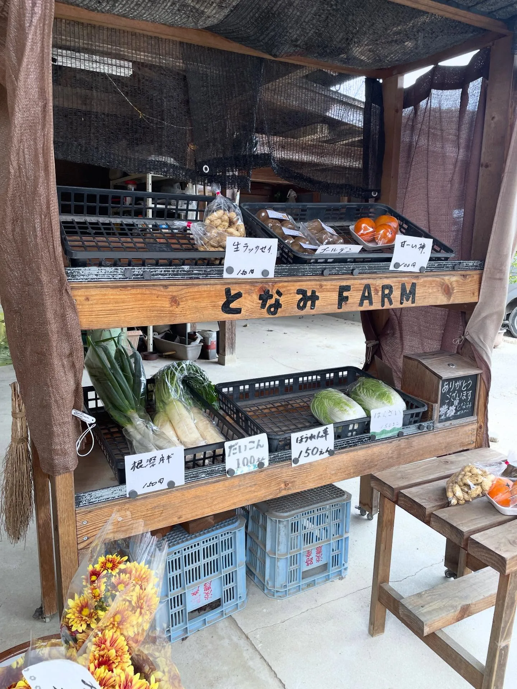
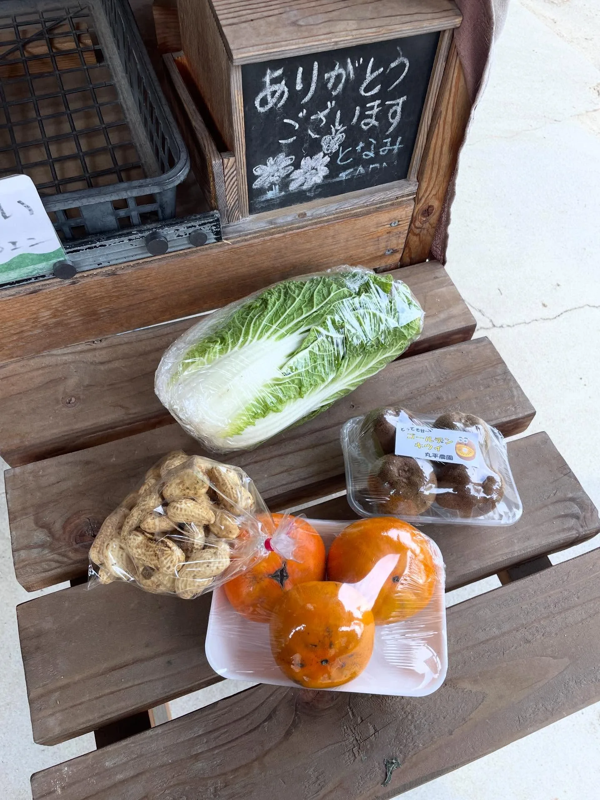
松葉蟹
11 月捕撈解禁，趁年輕可能還不會痛風吃爆！公的才叫松葉蟹，每一隻都會有產地身分證的小牌子（不同地區有不同顏色），價格從 2,000～15,000 日圓／隻都有，可以用大約 6,000 日圓以下的實惠價格，購入少幾隻腳的。母蟹小小隻，通常稱作香箱蟹或せいこ蟹，大約 600–800 日圓／隻。
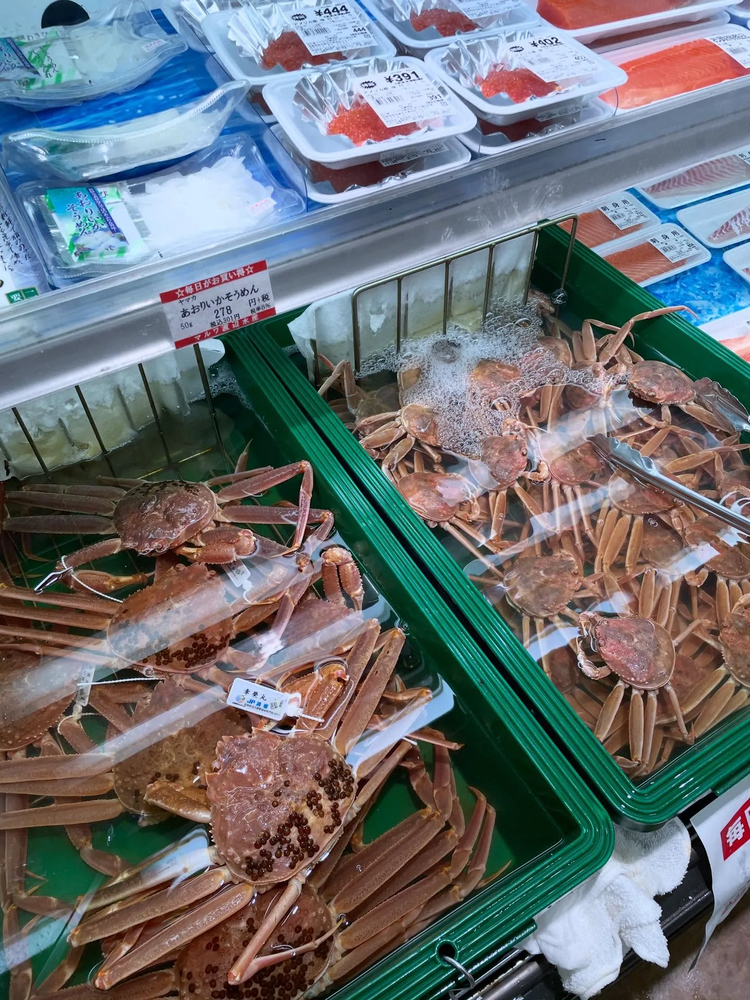
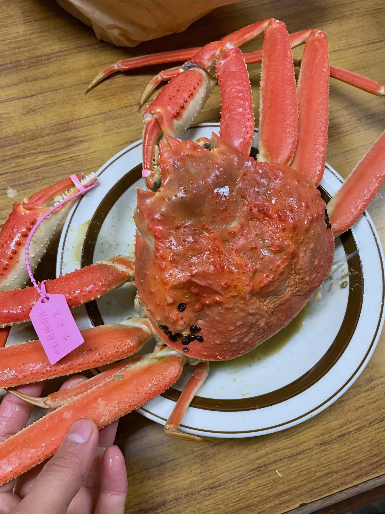
水煮的很常見，我花 5,000 日圓在柴山港買了一隻，但覺得不夠甜；host 說水煮的甜味會流失，於是我又買了一隻 3,000 日圓的自己蒸，有好吃一點但還是覺得不夠（但已經很好吃了啦！）。結果年底回台灣時，工作慶功宴吃到了吃到飽的松葉蟹，我覺得超甜（？？？）……難道是別人付錢的緣故？！另外也有去吃吃看蟹腳刺身，覺得沒特別熱愛，還是比較喜歡煮熟時的濃濃蟹味～
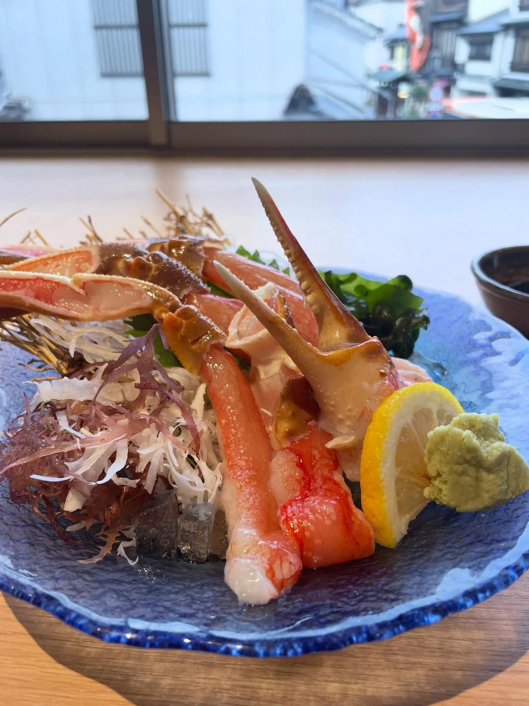
地瓜：沙丘上長出來的紅まいこ
京丹後的地瓜特色來自其種植於沙丘地形，有利根莖類作物積累澱粉與糖分，秋冬是產季，滿多直販所在銷售。我買了兩款簡單評比：一款是當時最常見的品種（但忘了買什麼），另一款則是京丹後產的「紅まいこ」，是一種栗子地瓜。烤箱烤過後的剖面，不用吃就知道紅まいこ超綿、纖維感低，吃起來也真的有栗子感。
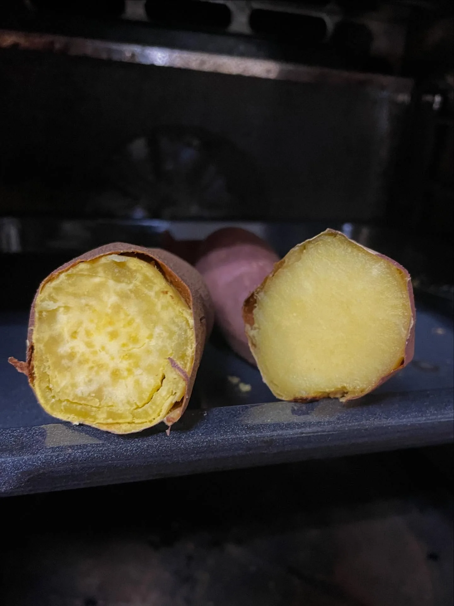
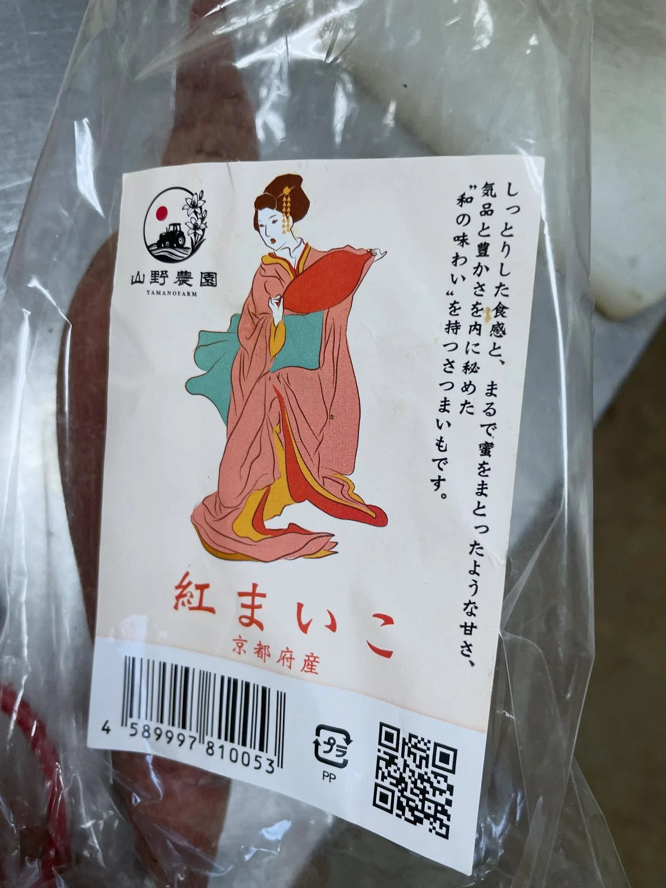
水梨：新興、王秋、愛宕
水梨也是這個地區的重要農產品，11 月屬於收穫的晚期。我吃的三款「新興、王秋、愛宕」，都是超大、送禮為主的類型，覺得跟台灣差不多好吃（比較對象是寶島甘露梨），價格大約是台灣的 8 成，或差不多，不記得大小顆的重量，但價格介於 400–1,000 日圓／顆。（註：「寶島甘露梨」是台灣本土品種，日本沒有。）
嘴拙吃不太出「新興」跟「王秋」的差別，大致上跟甘露梨的路線比較接近（不過，我記憶中的台灣新興梨比較不細緻、吃感比較粗），都是甜到很爽、比較張揚、海派的那種人，不過甘露梨又尤其甜到牙疼。資料說王秋是夢幻逸品耶！
另一款「愛宕」，一查才知道號稱「日本第一大梨」，吃得出特別不同：沒那麼甜、那麼軟，但很厚實、稍微再紮實一點，感覺人很有內涵、性格比較溫吞。這款是在日下部農園 買的。
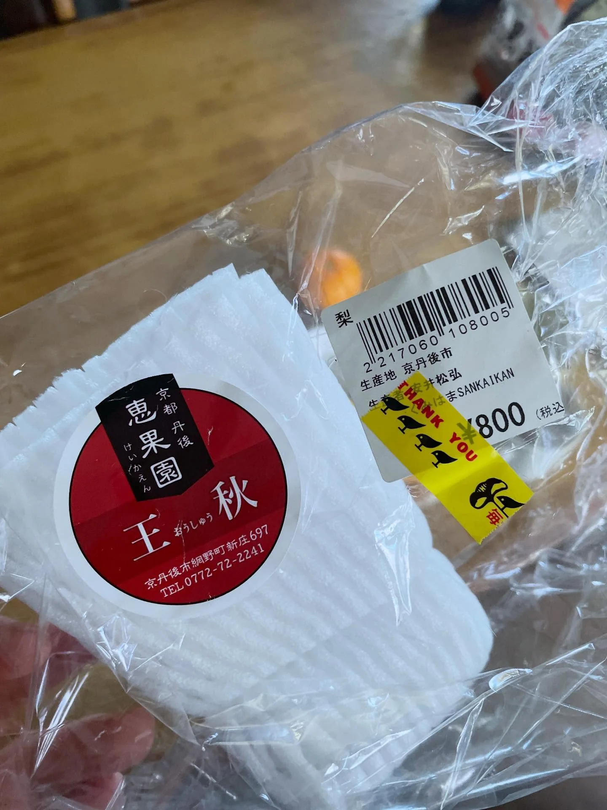
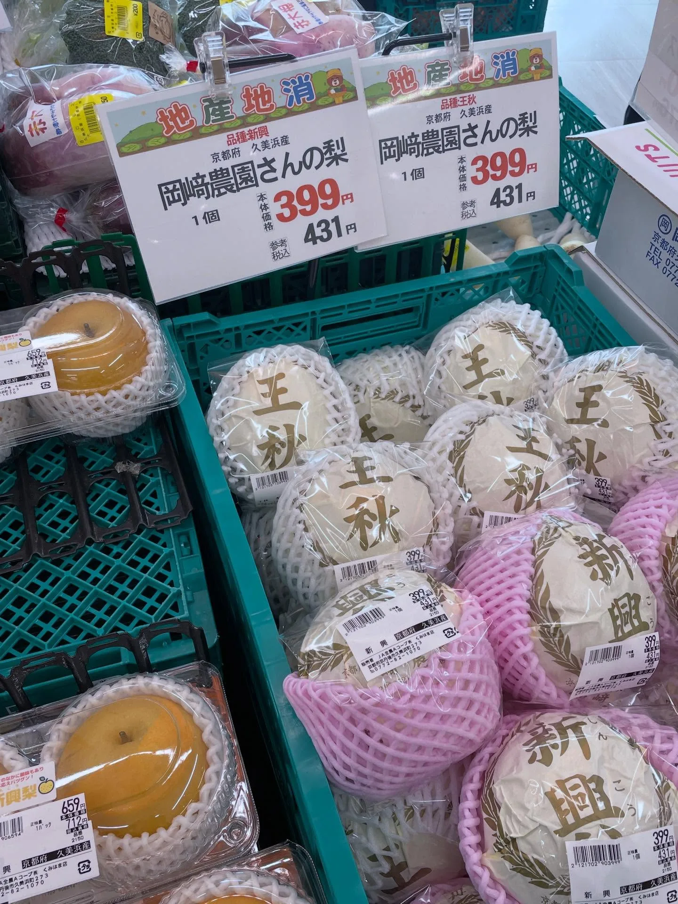
（水梨吃太多會拉肚子，要注意餒。）
延伸閱讀：〈日本打工度假的一年：出發前的準備、支出花費，和不打工的生活方式〉（2026-08-31）
關鍵字京都京丹後久美濱松葉蟹香箱蟹紅舞妓地瓜新興梨王秋梨愛宕梨農產直販所
留言
電子郵件不會公開，只用來辨識留言者。第一次留言會先經過審核，之後同一個電子郵件的留言會直接顯示。本留言區以 Cloudflare Turnstile 防止垃圾留言。